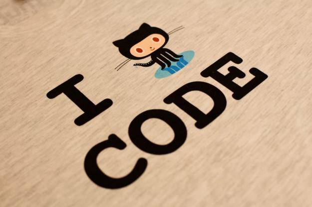

城南小青龙
搬砖大队广州分队中队长
Github: https://github.com/beatjerome
CSDN: http://blog.csdn.net/geek_jerome
E-mail: geekjerome@outlook.com || 1003160184@qq.com
本青龙是一枚网络工程专业的大二在校生
也许和很多经验丰富的大神们相比我很渺小，但我相信只要努力终会创造价值的~
本博客内容主要包括：
1.我学习算法时所刷过的OJ题解，力求用最清晰的思路和简洁的代码表达
2.我学习计算机知识（包括C/C++/Java/专业课等）时遇到的困惑与解决方法
3.我阅读计算机专业书籍时所进行的知识点整理
4.我阅读课外书籍（包括人文社科、历史科普、哲学类等）时的读书笔记
因为比较的杂，这也是取名为Grocery的本意之一
多读书 多动手
少上知乎多Google
